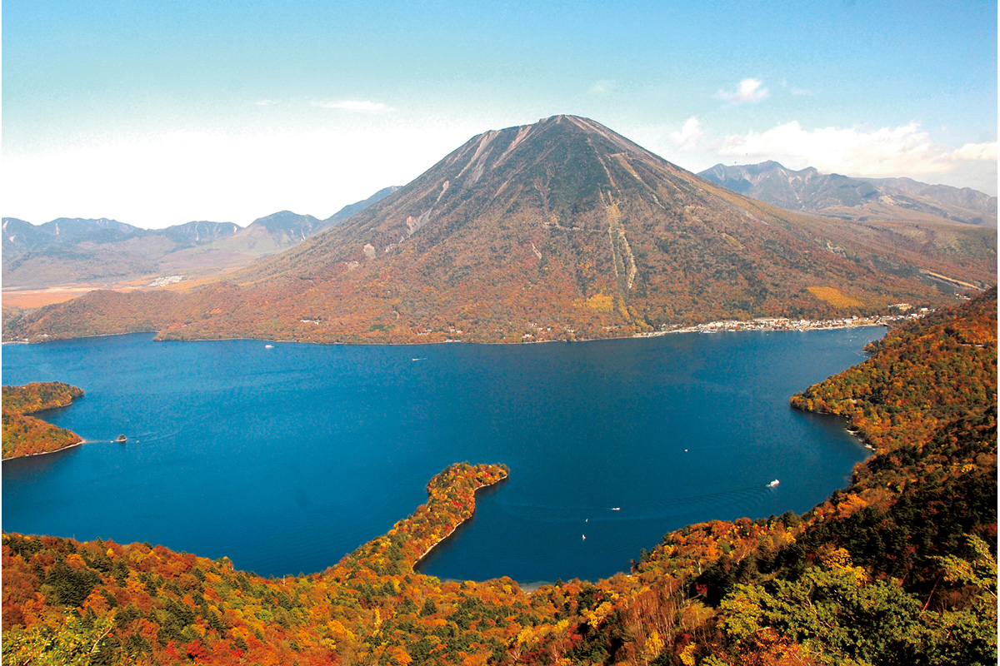
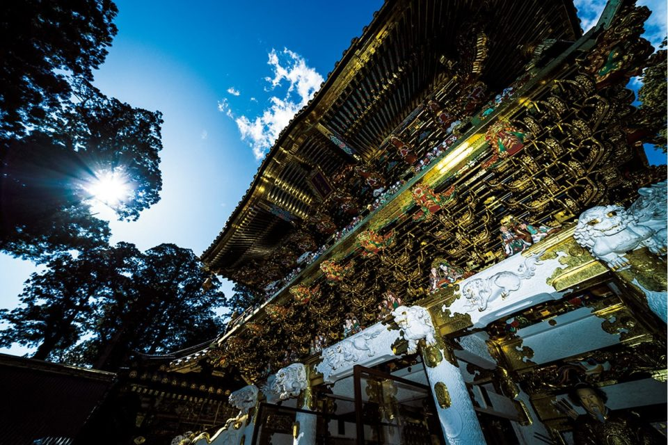
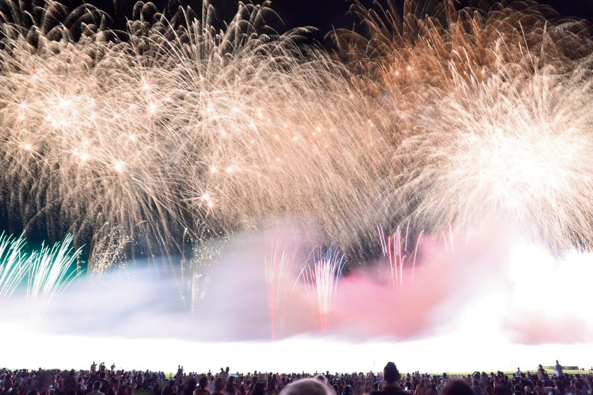
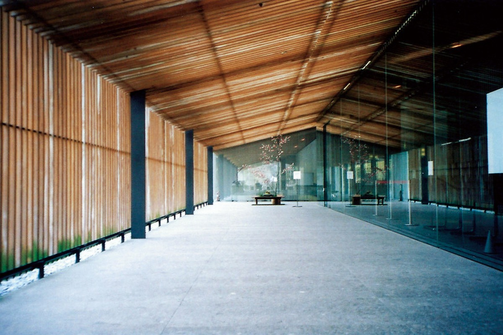
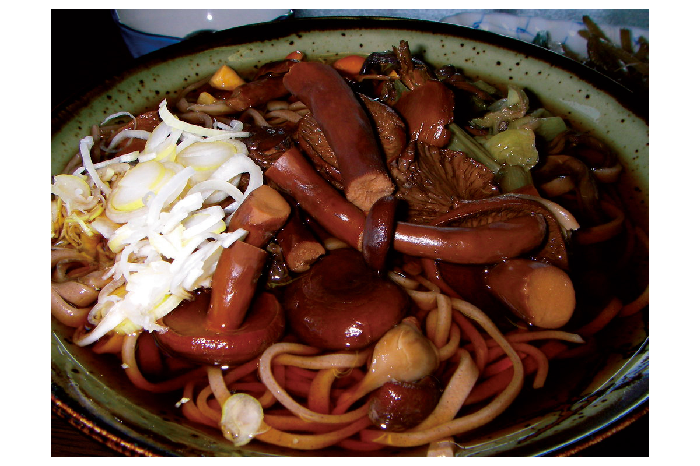
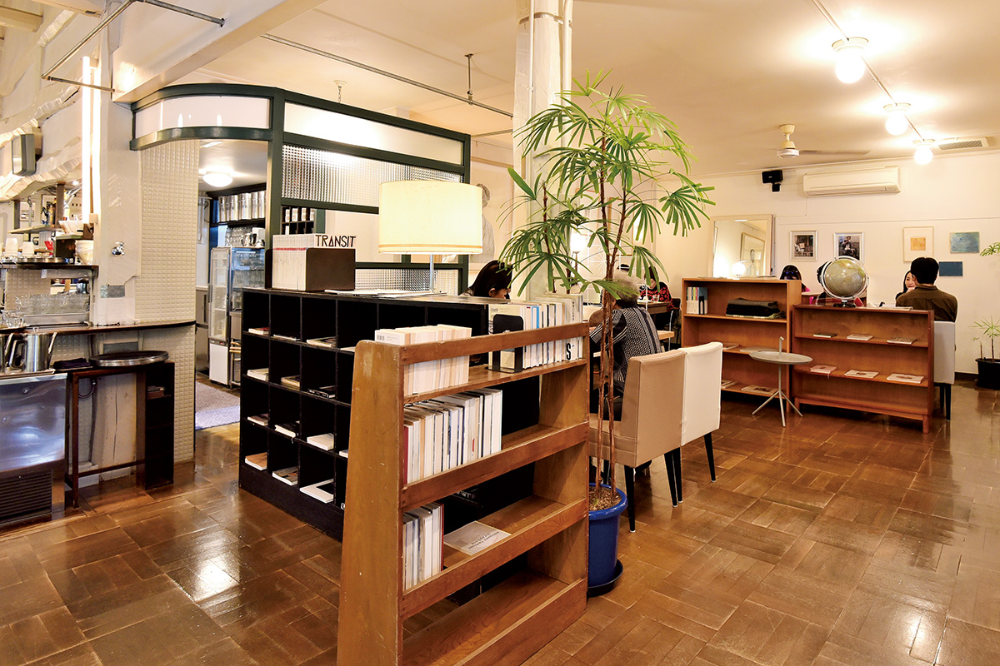
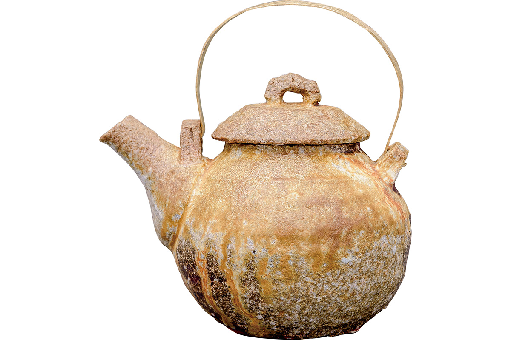
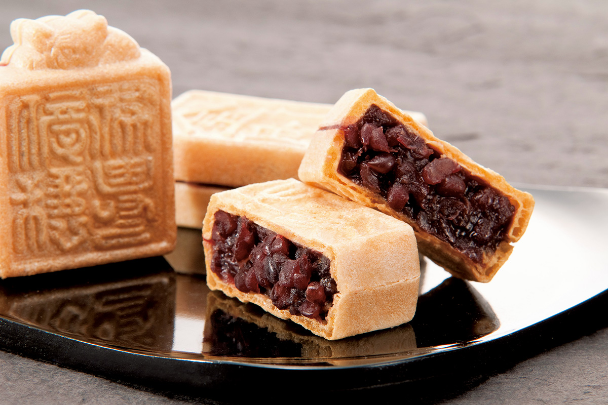
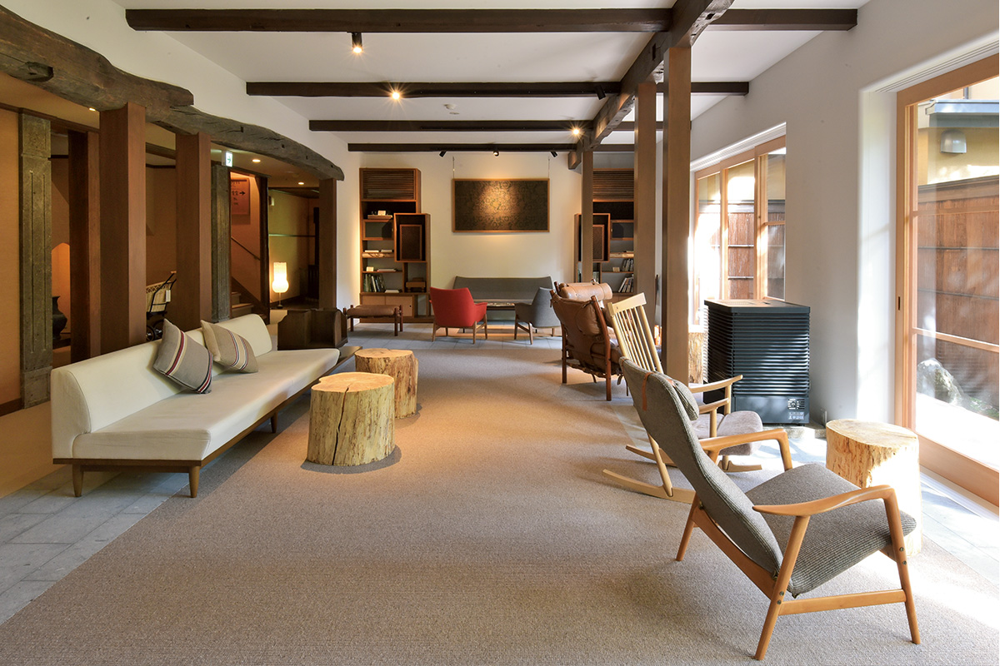

Префектура Тотиги
Тотиги: водопад, озеро и гёдза

Озеро Тюдзэндзи с высоты: вода, густой лес и гора Нантай на горизонте осенью в красных и жёлтых пятнах.
Здесь больше всего источников во всём Канто, здесь стоит святилище с самой богатой резьбой в стране, а в Уцуномии съедают больше всех гёдза. Рассказываем, за чем ехать в префектуру Тотиги.
О префектуре
Край воды и священных кедров
Больше половины земли Тотиги, около 53 процентов, занимают леса, и это одна из самых зелёных префектур региона Канто, у которой нет выхода к морю. Источников здесь больше, чем в любой другой префектуре Канто, и вокруг них сложились онсэны, то есть курорты с горячими ваннами: Кинокава, Насу, Сиобара и Никко, у каждого своя вода и свой характер.
В Никко в эпоху Эдо, то есть с XVII века, был похоронен Токугава Иэясу, основатель сёгуната: место стало священным, здесь построили святилище Тосёгу и другие храмы, а сёгуны из рода Токугава приезжали сюда на поклонение. После отмены княжеств, в 1873 году, префектуры Уцуномия и Тотиги объединились в нынешнюю Тотиги.
Эмблема префектуры построена на первом иероглифе её названия: три стрелы повторяют древнее начертание иероглифа «дерево», а круг говорит об энергии и движении. Сегодня Никко переживает вторую молодость: вслед за отелем Ritz-Carlton Nikko сюда приходят и другие дорогие курорты.
И ещё деталь: по доле домов с солнечными панелями префектура первая в стране, а по расходу электричества на человека одна из самых экономных.
Что посмотреть
Озеро высоко в горах и святилище с золотой резьбой
Озеро Тюдзэндзи
Озеро лежит у входа в дальний Никко и поднято выше, чем почти любое озеро Японии, поэтому вода в нём холодная и прозрачная. С берега и с воды открываются разные виды каждый сезон, а прогулочный кораблик позволяет посмотреть на горы с середины озера.
- Телефон
- +81 288-22-1525
- Справки
- туристическая ассоциация города Никко
Что ещё посмотреть
- Водопад Кэгон, водопад почти в сто метров, который падает из озера
- Храм Ринно-дзи, большой храм с залом, где стоит тысячерукая богиня милосердия
- Святилище Никко-Тосёгу, усыпальница Токугавы Иэясу с самой богатой резьбой в стране

Праздники
Фейерверк, которому больше ста лет
Фейерверк в Асикаге
Этот фестиваль идёт с 1903 года. В день праздника в небо поднимается около 25 тысяч залпов: это финал летнего праздника Асикага-нацумацури, и на берег реки приходит весь город.

- Период
- первая суббота августа
- Место
- берег реки Ватарасэ ниже моста Танака-баси, город Асикага
Другие праздники
- Тысяча лампадок на проводы душ предков, вечерние огни на праздник О-Бон, когда вспоминают предков
- Городской праздник «Фурусато-мия-мацури», шествие с платформами по улицам
- Праздник Тэнно в Уцуномии, старинный праздник святилища Футараяма
Музеи и архитектура
Музей, который построил Кэнго Кума
Музей Хиросигэ в Бато
Здесь показывают работы Утагава Хиросигэ, мастера цветной гравюры XIX века, который больше всего известен сериями видов дорог Японии. Здание спроектировал Кэнго Кума, архитектор, известный умением встраивать постройку в пейзаж: низкие объёмы, дерево и вода, так что музей словно растворяется в зелени.

- Адрес
- 116-9 Bato, Nakagawa-machi, Nasu-gun, Tochigi
- Телефон
- +81 287-92-1199
Что ещё посмотреть
- Музей искусств префектуры Тотиги, собрание живописи и графики
- «Форест Масико», центр керамики масико-яки
- Музей «Року», частный музей в старом здании
Местная кухня
Соба с грибом, который пахнет сильнее всех
Соба с грибами титакэ
Титакэ это местный гриб с очень сильным запахом. Его обжаривают с баклажаном и кладут в густой дип из соевого соуса, а рядом подают гречневую лапшу собу: лапшу обмакивают в дип и жуют, и с каждым куском запах гриба раскрывается сильнее.

Что ещё попробовать
- Симоцукарэ, тёртая морковь с лососем и жмыхами тофу
- Оккирикоми, лапша, которую варят вместе с овощами в одном горшке
- Итоко-ни, овощи и бобовые, тушённые вместе
Где поесть
Кафе, которое изменило городок
Кафе NASU SHOZO CAFE
В 1988 году Кикути Сёдзо открыл кафе в Куроисо, и, как говорят, оно изменило весь городок. Второе кафе работает на плато Насу: вокруг тишина и зелень, а внутри книги и длинные столы.

- Адрес
- 2730-25 Takakuotsu, Nasu-machi, Nasu-gun, Tochigi
- Телефон
- +81 287-78-3593
- Время работы
- с 10:00 до 18:00, последний заказ в 17:00
- Выходные
- нерегулярные
- Сайт
- shozo.co.jp
Ремёсла
Керамика из Масико
Масико-яки Мацудаки Кэна
Мастер ищет глину с характером и доводит обжиг до предела. Его работы это вазы для цветов и плоские сосуды хэко: форма получается сильной и простой, как будто из неё смотрит энергия самой земли.

- Справки
- мастерская Юсингама
- Телефон
- +81 285-72-0688
- Сайт
- yuushin-gama.com
Что привезти
Сладость в форме старинной печати
Монака «коин»
Лавке больше ста лет. Монака это хрустящая вафля с бобовой начинкой внутри, а здесь вафли придают форму старинных печатей. За образцы взяли знаки школы Асикага и храма Банна-дзи, а также печать художника Тадзаки Сёуна, мастера эпохи Мэйдзи. Набор из пяти штук стоит 785 иен.

- Телефон
- +81 284-21-4964
- Сайт
- koundohonten.jp
Где остановиться
Рёкан у императорской дачи
Рёкан Сансуйкаку
Гостиница стоит рядом с императорской дачей Насу и хранит дух эпохи Сёва, то есть середины XX века: дерево, свет, простые линии. В саду при рёкане разбит небольшой лес, так что вечером можно гулять почти в настоящем лесу.

- Адрес
- 206 Yumoto, Nasu-machi, Nasu-gun, Tochigi
- Телефон
- +81 287-76-3180
- Комнат
- 14
- Цена
- от 18 000 иен за ночь с двумя приёмами пищи, обслуживание включено, налоги и купальный сбор не включены
- Сайт
- sansuikaku.com
Местный диалект
Как здесь говорят «очень вкусно»
- массáка умнээочень вкусно
- этикаттэ иккюсуру бээсядем, отдохнём
- дзудзу нээмокро и неприятно
Рекорды
В чём Тотиги первый
- №1 клубника: первое место по урожаю
- №2 Уцуномия: первое место по расходам на гёдза
- №3 аллея кедров в Никко: самая длинная аллея в мире
Вопросы и ответы
Что ещё спрашивают о Тотиги
Что самое старое в Японии находится в храме Оя-Каннон в Уцуномии?
Каменная статуя. Главный образ это тысячерукая богиня милосердия Каннон, и предание относит её создание к 810 году, приписывая работу монаху Кукаю, одному из главных деятелей японского буддизма. Статую сравнивали с бамианскими изваяниями в Афганистане, и есть версия, что её высек афганский мастер.
Как в Тотиги читается название квартала «Синдзюку-тё» в Асикаге?
Арадзюку-тё. Квартал лежит в южной части города, в районе Ябагава, ближайшие станции это Ниракава и Фукуи на линии Тобу-Исэсаки. В остальной стране это слово прочли бы «синдзюку», но в Тотиги читают «арадзюку».
Справочник
Тотиги в цифрах
| Центр префектуры | город Уцуномия |
| Города и посёлки | 14 городов, 11 посёлков |
| Площадь | 6408 кв. км |
| Население | 1,93 миллиона человек |
| Плотность населения | 302 человека на кв. км |
| Туристов за год | 24,71 миллиона |
| Дерево префектуры | конский каштан |
| Цветок префектуры | рододендрон ясио |
| Птица префектуры | синяя мухоловка |
| Средняя температура | +15,2 |
| Максимум | +32,8 |
| Минимум | минус 2,8 |
| Осадки | 1257 мм |
| Ясных дней | 28 |
| Дождливых дней | 101 |
| Снежных дней | 17 |
| Онсэнов | 66 |
| Музеев искусств | 13 |
| Музеев | 12 |
| Митиноэки, придорожных станций | 25 |
| Национальных сокровищ | главное здание святилища Тосёгу с залом Иси-но-ма и хайдэн, всего 17 |
| Важных культурных ценностей | 166 |
| Исторических мест | 37 |
| Природных памятников | 9 |
| Национальные парки | Никко и Одзэ, всего 2 |
Природные памятники
- Кедр Гякусуги, дерево с необычно изогнутым стволом
- Аллея кедров Никко, аллея вместе со стелой о её закладке
- Валуны Нагуса, россыпь огромных камней
- Вишня Конго-дзакура, старое дерево, цветение которого ждут